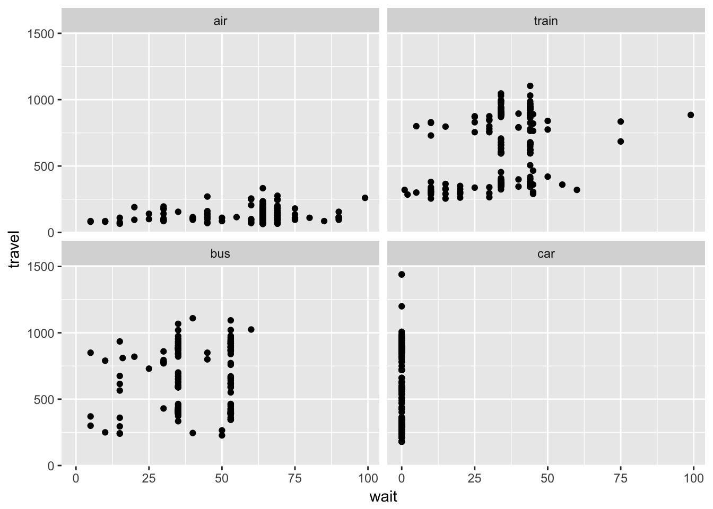
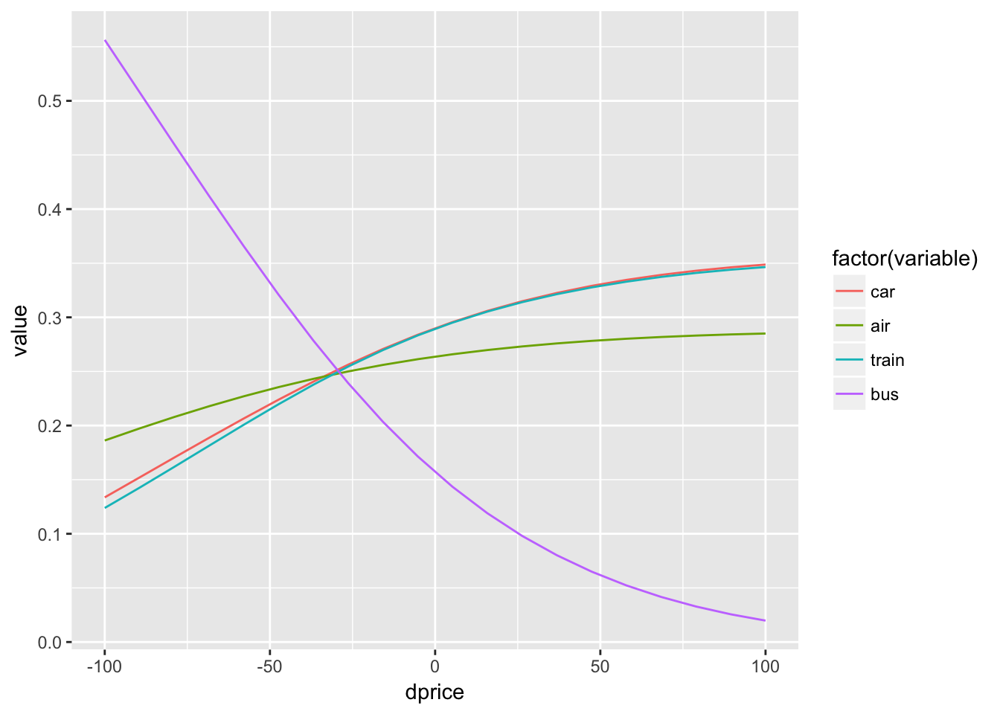
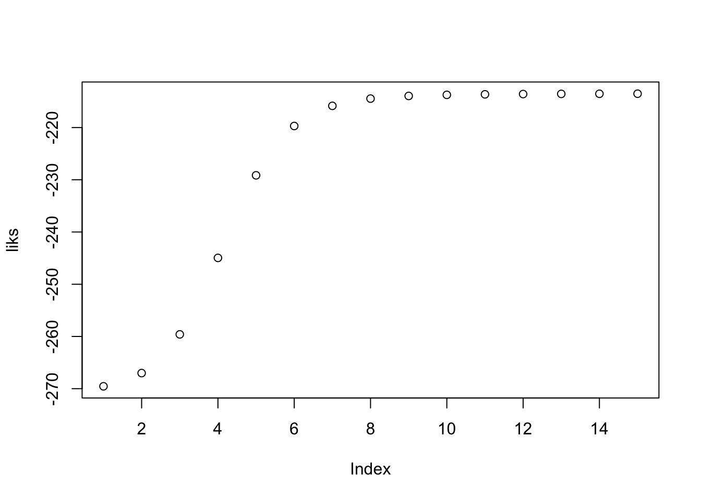

We consider here discrete choices over a set of alernatives. THe utility of the agent is modeled as
\[u_i(j) = \beta X_i + \epsilon_{ij}\]
and when the error term is type 2 extreme value:
\[F(\epsilon_{ij}) = \exp( -\exp( -\epsilon_{ij} ) )\]
the choice probability is given by
\[ Pr[j(i)^*=j] = \frac{ \exp[ u_i(j) ] }{ \sum_j' \exp[ u_i(j') ]} \]
Armed with these tools we can tackle the data we are given.
library(AER)
library(mlogit)
library(kableExtra)
library(knitr)
library(foreach)
data("TravelMode")
data = TravelMode
kable(data[1:10,])| individual | mode | choice | wait | vcost | travel | gcost | income | size |
|---|---|---|---|---|---|---|---|---|
| 1 | air | no | 69 | 59 | 100 | 70 | 35 | 1 |
| 1 | train | no | 34 | 31 | 372 | 71 | 35 | 1 |
| 1 | bus | no | 35 | 25 | 417 | 70 | 35 | 1 |
| 1 | car | yes | 0 | 10 | 180 | 30 | 35 | 1 |
| 2 | air | no | 64 | 58 | 68 | 68 | 30 | 2 |
| 2 | train | no | 44 | 31 | 354 | 84 | 30 | 2 |
| 2 | bus | no | 53 | 25 | 399 | 85 | 30 | 2 |
| 2 | car | yes | 0 | 11 | 255 | 50 | 30 | 2 |
| 3 | air | no | 69 | 115 | 125 | 129 | 40 | 1 |
| 3 | train | no | 34 | 98 | 892 | 195 | 40 | 1 |
library(AER)
library(mlogit)
library(kableExtra)
library(knitr)
library(reshape2)
data("TravelMode")
TravelMode <- mlogit.data(TravelMode, choice = "choice", shape = "long", alt.var = "mode", chid.var = "individual")
data = TravelMode
## overall proportions for chosen mode
with(data, prop.table(table(mode[choice == TRUE])))##
## air train bus car
## 0.2761905 0.3000000 0.1428571 0.2809524## travel vs. waiting time for different travel modes
ggplot(data,aes(x=wait, y=travel)) + geom_point() + facet_wrap(~mode)
## Greene (2003), Table 21.11, conditional logit model
fit1 <- mlogit(choice ~ gcost + wait, data = data, reflevel = "car")
# fit1 <- mlogit(choice ~ gcost + wait | income, data = data, reflevel = "car")
# fit1 <- mlogit(choice ~ gcost + wait + income, data = data, reflevel = "car") # why doesn't it work?
summary(fit1)##
## Call:
## mlogit(formula = choice ~ gcost + wait, data = data, reflevel = "car",
## method = "nr", print.level = 0)
##
## Frequencies of alternatives:
## car air train bus
## 0.28095 0.27619 0.30000 0.14286
##
## nr method
## 5 iterations, 0h:0m:0s
## g'(-H)^-1g = 0.000221
## successive function values within tolerance limits
##
## Coefficients :
## Estimate Std. Error t-value Pr(>|t|)
## air:(intercept) 5.7763487 0.6559187 8.8065 < 2.2e-16 ***
## train:(intercept) 3.9229948 0.4419936 8.8757 < 2.2e-16 ***
## bus:(intercept) 3.2107314 0.4496528 7.1405 9.301e-13 ***
## gcost -0.0157837 0.0043828 -3.6013 0.0003166 ***
## wait -0.0970904 0.0104351 -9.3042 < 2.2e-16 ***
## ---
## Signif. codes: 0 '***' 0.001 '**' 0.01 '*' 0.05 '.' 0.1 ' ' 1
##
## Log-Likelihood: -199.98
## McFadden R^2: 0.29526
## Likelihood ratio test : chisq = 167.56 (p.value = < 2.22e-16)One way to test the assumption is to estimate without one alternative and see if it affects the parameters. For instance we can focus on whether air or train is chosen and estimate within.
fit.nested <- mlogit(choice ~ wait + gcost, TravelMode, reflevel = "car",
nests = list(fly = "air", ground = c("train", "bus", "car")),
unscaled = TRUE)
summary(fit.nested)##
## Call:
## mlogit(formula = choice ~ wait + gcost, data = TravelMode, reflevel = "car",
## nests = list(fly = "air", ground = c("train", "bus", "car")),
## unscaled = TRUE)
##
## Frequencies of alternatives:
## car air train bus
## 0.28095 0.27619 0.30000 0.14286
##
## bfgs method
## 15 iterations, 0h:0m:0s
## g'(-H)^-1g = 6.59E-07
## gradient close to zero
##
## Coefficients :
## Estimate Std. Error t-value Pr(>|t|)
## air:(intercept) 7.0761993 1.1077730 6.3878 1.683e-10 ***
## train:(intercept) 5.0826937 0.6755601 7.5237 5.329e-14 ***
## bus:(intercept) 4.1190138 0.6290292 6.5482 5.823e-11 ***
## wait -0.1134235 0.0118306 -9.5873 < 2.2e-16 ***
## gcost -0.0308887 0.0072559 -4.2571 2.071e-05 ***
## iv.fly 0.6152141 0.1165753 5.2774 1.310e-07 ***
## iv.ground 0.4207342 0.1606367 2.6192 0.008814 **
## ---
## Signif. codes: 0 '***' 0.001 '**' 0.01 '*' 0.05 '.' 0.1 ' ' 1
##
## Log-Likelihood: -195
## McFadden R^2: 0.31281
## Likelihood ratio test : chisq = 177.52 (p.value = < 2.22e-16)data2 =copy(data)
I=paste(data2$mode)=="bus"
# force other alternatives to mean value
for (mm in c('car','train','air')) {
#data2$gcost[paste(data2$mode)==mm] = mean(data2$gcost[paste(data2$mode)==mm])
data2$wait[paste(data2$mode)==mm] = mean(data2$wait[paste(data2$mode)==mm])
}
# run a for lopp for different prices
# save shares for each option
rr = foreach(dprice = seq(-100,100,l=20), .combine = rbind) %do% {
data2$gcost[I] = data$gcost[I] + dprice
res = colMeans(predict(fit.nested,newdata=data2))
res['dprice'] = dprice
res
}
rr = melt(data.frame(rr),id.vars = "dprice")
ggplot(rr,aes(x=dprice,y=value,color=factor(variable))) + geom_line()
Let’s try with 2 groups of people to run an EM
C = acast(data,individual ~ mode,value.var="choice")
C = C[,c(4,1,2,3)]
p1=0.5
I = sample(unique(data$individua),nrow(data)/8)
I =data$individual %in% I
# we start with the very first mlogit (we randomly sub-sample to create some variation)
fit1 <- mlogit(choice ~ gcost , data = data[I,], reflevel = "car")
fit2 <- mlogit(choice ~ gcost , data = data[!I,], reflevel = "car")
liks = rep(0,15)
for (i in 1:15) {
# for each individual we compute the posterior probability given their data
p1v = predict(fit1,newdata=data)
p2v = predict(fit2,newdata=data)
p1v = rowSums(p1v * C)*p1
p2v = rowSums(p2v * C)*(1-p1)
liks[i] = sum(log(p1v+p2v))
#cat(sprintf("ll=%f\n",ll))
p1v = p1v/(p1v+p2v)
p1v = as.numeric( p1v %x% c(1,1,1,1) )
# finally we run the 2 mlogit with weights
fit1 <- mlogit(choice ~ gcost , data = data,weights = p1v, reflevel = "car")
fit2 <- mlogit(choice ~ gcost , data = data,weights = as.numeric(1-p1v), reflevel = "car")
p1 = mean(p1v)
}
print(fit1)##
## Call:
## mlogit(formula = choice ~ gcost, data = data, weights = p1v, reflevel = "car", method = "nr", print.level = 0)
##
## Coefficients:
## air:(intercept) train:(intercept) bus:(intercept)
## -5.72139 4.50935 2.58228
## gcost
## -0.16258print(fit2)##
## Call:
## mlogit(formula = choice ~ gcost, data = data, weights = as.numeric(1 - p1v), reflevel = "car", method = "nr", print.level = 0)
##
## Coefficients:
## air:(intercept) train:(intercept) bus:(intercept)
## 1.501304 -1.337636 -2.413040
## gcost
## 0.030909print(p1)## [1] 0.6390407plot(liks)